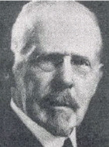

|  |
Tay-Sachs disease = an autosomal recessive disorder involving the lysozymal enzymes. The result is neuronal degeneration and cherry red spot of the eyes. Death occurs before 3 years of age.
Bernard Sachs’ parents were of Jewish descent. His father was a teacher who had grown up in a small town in Bavaria near Schweinfurth. Whilst studying in Würzburg, he eloped with a girlfriend to Hamburg in 1847 and boarded a ship to the U.S.A. They had six children.
Although he early decided to pursue a medical career, Bernard Sachs first concentrated his studies on literature and the classics. He studied at Harvard Medical College in Cambridge from 1874 to 1878. One of his teachers, the psychologist and philosopher William James (1842-1910), was having trouble with his eyes and asked a member of the class to read a chapter from Wilhelm Wundt’s Psychology. Sachs undertook this task and this aroused his interest in the study of mental disorders.
Sachs graduated B.A. from Harvard with honours in 1878 and went to Europe where he studied medicine in Strassburg, Vienna, and Berlin. He chose Strassburg because of the strong medical faculty at the time. He was most impressed by Adolf Kussmaul (1822-1902) but also found von Fredrich Daniel Recklinghausen (1833-1910) an inspiring teacher. Sachs quoted a comment of Wilhelm von Waldeyer-Hartz (1836-1921) who did not like any of the textbooks of anatomy except Josef Hyrtls (1810-1894) because “it contains anecdotes: you will remember the anecdotes and promptly forget the anatomy.”
While working with Friedrich Leopold Goltz (1834-1902) Sachs wrote his first paper which appeared in Virchow’s Archiv für pathologische Anatomie und Physiologie und für klinische Medicin in 1882. He visited and worked with Karl Friedrich Otto Westphal (1833-1890) and Rudolf Virchow in Berlin. After receiving his degree from the University of Vienna in 1882 Sachs, along with fellow student Sigmund Freud (1856-1939), remained to continue postgraduate studies in cerebral anatomy and neuropsychiatry with Theodor Hermann Meynert (1833-1892). Later, in 1885, Sachs translated Meynert’s classic treatise Psychiatrie.
To round off his education in medicine and neurological science Sachs spent a year with Jean-Martin Charcot (1825-1893) in Paris and John Hughlings Jackson (1835-1911) in London.
Sachs sailed back to the U.S.A. in 1884 to live in New York, where his parents had settled. He spent three years in New York as an assistant to Isaac Adler (1849-1918), before establishing a private practice for the treatment of mental and nervous diseases. In 1887 Sachs, now recognized as one of America’s leading clinical neurologists, became an instructor at the New York Polyclinic Hospital.
At this stage he wrote his article on arrested cerebral development with special referance to its cortical pathology, in which a cherry red macula had been noted clinically by his associate Herman Jakob Knapp (1832-1911). Later on, recognising the familial nature of the condition, he called the disorder “amaurotic familial idiocy”. He was unaware that Tay had already published an account of brownish-red circular spot in each macula surrounded by a whote halo in an infant. Tay considered the change to be similar to the picture of embolism of the central artery of the retina. Hughlings Jackson had been called as a consultant and was unable to find any evidence of cerebral problems. Later it was recognised that Tay and Sachs were seeing different facets of the same condition.
In 1893 he was appointed consultative neurologist at Mount Sinai Hospital in New York and consulting physician to Manhattan State Hospital. At Mount Sinai he helped arrange for the establishment of a neurological bed service, the first separate division of its kind in a New York health facility.
Sachs was an intelligent man with a strong sense of humour. He was outspoken and could be very sharp in repartee, but he was also a very generous man. As a neuro-psychiatrist he was often called to court cases and in his autobiography tells the story of a lady who was suffering from senile dementia and who had left most of her money to the lawyer who had drawn up her will. “I suppose’, asked the cross-examining lawyer, “that it is very easy for you, Dr. Sachs to tell whether a person is sane or insane. I presume you can tell by looking at me whether I am sane or insane.’ Very promptly I answered ‘Not by looking, but possibly by listening to you.’ That settled him.”
He had a lucrative private practice but he lost most of his money when the stock market collapsed. Gradually, however, he regained his losses to become a philantrophist and art collector.
Sachs published almost 200 articles and several books including The Normal Child (1926) wherein he largely advocated that parents should be guided by common sense and not pyschological theories, and in which he particularly attacked Freudian pyschology. This followed an earlier work directed at the medical profession rather than the lay public, Nervous and Mental Disorders From Birth Through Adolescence.
Bibliography: